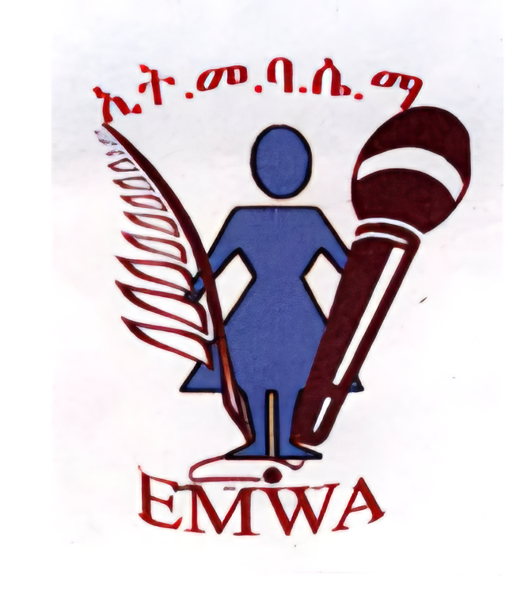
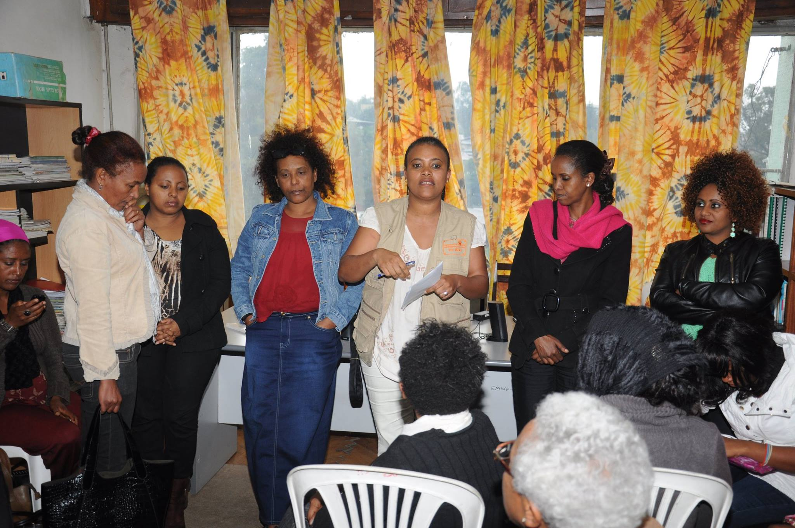
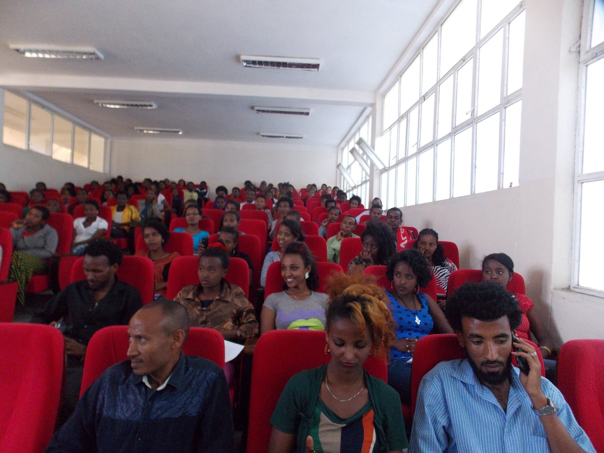
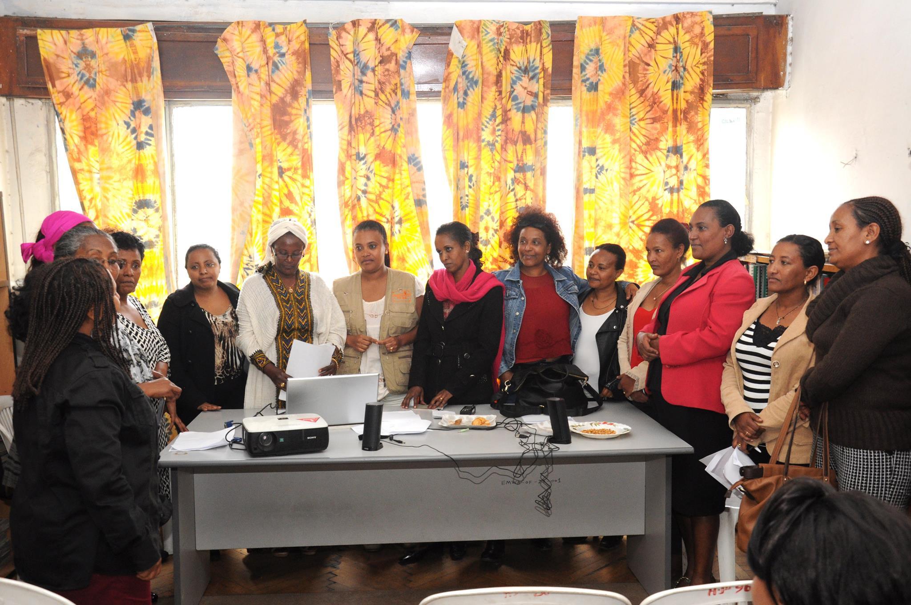
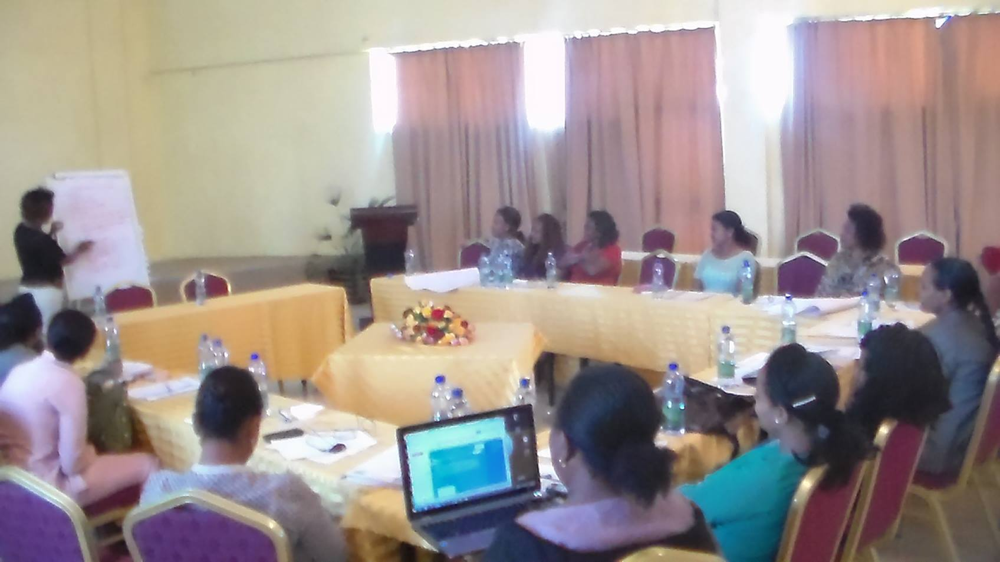

Advocacy • Leadership • Equality
Empowering Ethiopian Women Through Media & Advocacy
EMWA works to strengthen the participation, leadership, visibility, and professional growth of women media practitioners through advocacy, mentorship, journalism training, and public engagement initiatives across Ethiopia.
Organizational Impact
Women Reached
Journalism Trainings
Advocacy Campaigns
Media Outreach

Since 1998
About EMWA
The Ethiopian Media Women Association (EMWA) is dedicated to empowering Ethiopian women working in journalism, broadcasting, communication, and digital media.
Through advocacy, mentorship, professional development, and strategic partnerships, EMWA works to strengthen women's participation and leadership within Ethiopia’s media sector.
EMWA promotes ethical journalism, gender equality, freedom of expression, and safer professional environments for women media practitioners across the country.
Years of Advocacy
Community Reach
Programs & Initiatives

Practical training programs supporting women journalists in storytelling, reporting, ethics, and digital media skills.

Building confidence, leadership capacity, and long-term professional growth opportunities for women media practitioners.

Public engagement campaigns promoting gender equality, inclusion, and women's representation in media.
Publications & Resources
Annual Report
Advocacy milestones, research findings, and organizational impact across Ethiopia.
Policy Brief
Research-based recommendations promoting inclusive participation in Ethiopian media institutions.
Media Toolkit
Educational resources supporting ethical, balanced, and gender-sensitive reporting practices.
Community Engagement
Vision for the Future
EMWA envisions a media environment where Ethiopian women participate equally in journalism, leadership, storytelling, and national public dialogue.
Through collaboration, advocacy, and professional support, EMWA continues working toward meaningful and sustainable change.
Women Journalists Supported
Regional Outreach Programs
Training Events Organized
Advocacy Presence